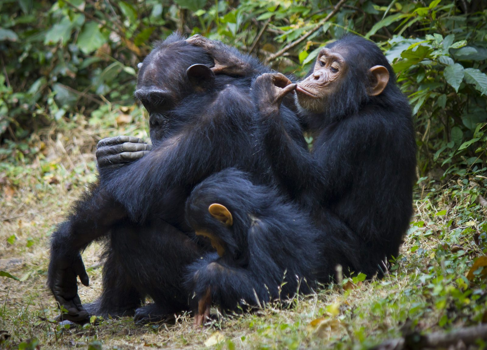
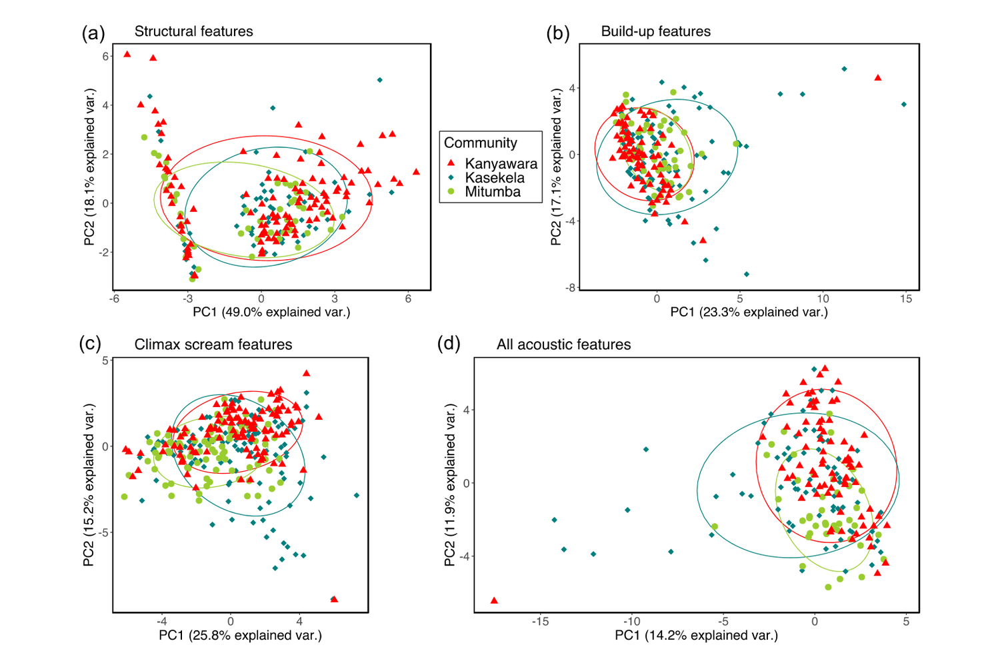

A call that carries
A male chimpanzee opens with a few low, soft hoots. Those notes quicken into rhythmic panting, climb into piercing screams, and often finish with his feet drumming against the buttress roots of a tree. Other chimpanzees hundreds of meters away and completely out of sight hear this long-distance call—the pant-hoot—and I spent much of my Ph.D. testing what information rides inside it.

The debate over chimpanzee dialects matters because it reaches into the origins of human speech. Humans learn to speak by imitating the sounds around them, a skill shared by songbirds, whales, and parrots, whereas most primates appear to produce their vocal repertoires largely without learning. If chimpanzee communities maintained learned local dialects, some piece of vocal learning might trace back to our shared ancestor—and a vocal badge would also be useful in the wild, where encounters with neighboring communities can turn lethal.
Field experiments confirm that chimpanzees recognize strangers by ear. In Kibale National Park, Uganda, my advisor Michael Wilson played a single pant-hoot from another population through a hidden speaker (he recounts the experiment in a blog post about our study). Large parties of males roared back and marched toward the speaker, whereas smaller parties fell silent or slipped away. What those playbacks left unresolved was what the listeners recognized: a foreign community dialect, or simply an individual voice they had never heard before.
A claim resting on three animals
When I examined the published evidence for chimpanzee dialects, the empirical foundation proved much thinner than the headline idea. The first study compared Gombe with Mahale, two Tanzanian parks roughly 160 kilometers apart—far enough that genetic differences, body size, or forest acoustics could explain vocal variation without any social learning. A later analysis by the same research group found that community membership explained 0 to 11 percent of variation in the calls, compared with 17 to 52 percent explained by individual identity.
The strongest claim for learned dialects came from Taï National Park in Côte d'Ivoire, where neighboring communities sounded more distinct from each other than from a distant community—the divergence you would expect if neighbors actively pushed their calls apart. Yet that comparison rested on just three adult males per community. Small, noisy samples both miss genuine patterns and generate dramatic false alarms.
A dramatic pattern from three animals is a reason to replicate before treating it as fact.
I therefore designed my dissertation project as a direct replication with larger samples and stricter controls: comparing two neighboring communities where learned divergence should be largest, alongside one distant community for contrast.
Recording at Gombe
Gombe National Park, on the eastern shore of Lake Tanganyika, hosts the longest-running study of wild chimpanzees. In 2016, Michael Wilson and I trained two Tanzanian field assistants, Hashim Issa Salala and Nasibu Zuberi Madumbi, to follow adult males through the forest with a shotgun microphone and digital recorder, logging the caller's identity, activity, and nearby companions for every call. I coordinated data collection from Minnesota and returned to Gombe in 2017; by December 2017, the team had recorded 1,252 calls across two neighboring communities, Kasekela and Mitumba.
Turning raw forest recordings into a clean analysis set eliminated most of those calls. I screened the 1,252 recordings down to 723 with sufficient signal quality, then removed overlapping choruses and males with fewer than eight usable pant-hoots, leaving 214 calls from 11 Gombe males. Wild chimpanzee politics added their own surprises: Kasekela's alpha male was overthrown in October 2016 and was never recorded giving a pant-hoot again, and Mitumba's alpha killed another adult male in July 2017. For the distant comparison community, Pawel Fedurek and Katie Slocombe shared 111 pant-hoots from 7 males in Kanyawara, Kibale National Park, Uganda, bringing the final dataset to 325 calls from 18 males.
Before fitting a single model, I audited how field collection could bias the sample using the STRANGE checklist for animal behavior studies:
- Who calls gets counted: High-ranking males pant-hoot more often, making them more likely to clear the eight-call cutoff.
- When calls get counted: Chimpanzees call more frequently in the morning and possibly when ripe fruit is abundant, so mornings and the wet season are likely overrepresented.
- Family resemblance: Three of the six Kasekela males were close relatives—two brothers and their father—meaning inherited vocal similarity could make Kasekela sound distinct without any vocal learning.
Turning a call into numbers
Because a pant-hoot arrives as a continuous audio wave rather than a spreadsheet, I translated each recording into structured acoustic features. From each call's spectrogram, I measured 14 whole-call structural features by hand: how many elements appeared in each phase, how long each phase lasted, how fast the build-up paced itself, and whether that build-up accelerated. I then isolated two focal notes—the middle element of the build-up and the highest-pitched scream of the climax—and extracted 24 and 25 acoustic measurements of pitch, tonality, and noisiness using specialized bioacoustics software.
Wherever possible, I matched the exact acoustic measurements used in earlier dialect studies. Keeping the feature definitions aligned meant that if my replication contradicted earlier claims, nobody could attribute the discrepancy to measuring different properties of the sound.
What to hold constant
Testing whether community membership shapes a call looks simple on paper, yet community identity is tangled with multiple confounders. Communities occupy separate territories, so geography influences both local forest acoustics and genetic relatedness, while every community also consists of particular males with their own distinct voices. Any of those pathways can make two communities sound different with zero vocal learning.
To choose control variables systematically rather than by guesswork, I mapped those causal assumptions as a directed acyclic graph (DAG) in dagitty. The software identified two sufficient adjustment sets that isolate the direct path from community to acoustic structure. Because I had no measurements of genes or habitat acoustics, I used the observable adjustment set: holding individual identity and geographical location constant.
I controlled each variable in the way that suited it best. Geography came from study design: Kasekela and Mitumba share the same forest and gene pool at Gombe, so I compared those neighbors first before adding distant Kanyawara. Individual identity required a specialized statistical baseline, while behavioral context (feeding vs. traveling)—which adds variance without confounding community—was tested first and found to shift only whole-call structure, so I analyzed structural features within each context separately.
A test that a talkative male cannot fool
Primatologists typically test for vocal dialects with a linear classifier (discriminant function analysis) that learns acoustic boundaries between communities and predicts community membership on held-out calls. That standard setup carries a serious data-leakage trap: because every male belongs to one community, a classifier that simply memorizes Sampson's distinctive voice automatically "predicts" Kasekela, inflating apparent dialect accuracy.
To close that loophole, I used a permutation version of the test (permuted discriminant function analysis). The algorithm trains the classifier on balanced subsets of calls and scores it on held-out calls, then shuffles the community labels across whole males—keeping all of each male's calls bundled together—and repeats the entire procedure 1,000 times. Because recognizing individual voices boosts accuracy on shuffled labels just as much as on real ones, the true bar to beat is the classifier's shuffled accuracy rather than naive 50 percent chance.
Before running each classifier, I prevented overfitting across dozens of correlated acoustic features by compressing them with principal components analysis (PCA). I capped the number of retained components at the smallest group's call count and at 90 percent of total variance, then verified that every main conclusion held under an alternative component-selection rule.
The baseline is part of the claim. Beat the wrong baseline and you can prove almost anything.
What the calls carried
Once evaluated against that voice-proof baseline, evidence for dialects between neighboring communities disappeared, whereas individual vocal signatures stood out clearly. Across Kasekela and Mitumba—the exact neighboring pair where learned dialects should diverge most sharply—no feature set separated the two communities reliably. Whole calls scored 59.6 percent correct vs. 54.6 percent on shuffled labels (1.09×, p = 0.27), and the closest test, climax screams, reached 70.7 percent vs. 58.0 percent shuffled (1.22×, p = 0.089).
One community test crossed the conventional significance bar, and I report it alongside its limits. When I pooled all three communities together, climax screams separated groups above the shuffled baseline (54.0 percent vs. 40.8 percent, 1.32×, p = 0.016). Even there, however, no individual pair of communities differed reliably on its own, and a weak gap emerging only between national parks hundreds of kilometers apart can readily reflect genetics or forest acoustics rather than vocal learning.
Individual identity told a far clearer story. The same permuted classifier identified individual males well above its shuffled baseline using call structure, whole calls (14.4 percent vs. 7.6 percent across 17 males, 1.89×, p = 0.007), and climax screams (20.1 percent vs. 9.4 percent across 18 males, 2.14×, p = 0.001)—both among Gombe neighbors and across all three communities. Climax scream pitch (average, peak, and range) and climax duration carried the strongest individual cues, whereas the middle build-up element alone failed to separate males.
That vocal signature is reliable yet imperfect rather than an infallible fingerprint. Naming the right male out of 18 from a single climax scream roughly 20 percent of the time doubles the shuffled baseline, reflecting the reality that some males sound unmistakable while others overlap. Plotting the calls directly in principal-component space makes the contrast visible even without a classifier.


Finally, behavioral context left a modest structural trace in the calls. Pant-hoots given while traveling contained more build-up and let-down elements, whereas pant-hoots given at food patches packed in more climax screams.
What it does not show
Failing to detect community dialects does not prove that dialects never exist. With five to seven males per community, my sample improved on the three-male Taï study and had enough power to detect an effect that large, yet it remained too small to rule out subtler group differences—and Gombe could still prove unusual. Like earlier dialect studies, this analysis also could not adjust for each caller's age, body size, health, rank, or measured forest acoustics. In the published paper, I spelled out those limits and called for larger multi-site datasets analyzed with Bayesian models—a shift that has since made Bayesian inference central to my work.
What the evidence does support is narrower and sturdier. Once I enforced the causal controls and used a permutation baseline that individual voices cannot game, evidence for neighboring community dialects faded while evidence for individual identity held firm.
Those findings also suggest a simpler solution to the playback puzzle. A chimpanzee who remembers the individual voices of his own community's males needs no group dialect to detect a stranger in the forest. And if chimpanzees lack the vocal learning seen in songbirds and whales, the flexible vocal imitation behind human speech likely evolved in our own lineage after our ancestors split from theirs.
Where it led
If pant-hoots reliably encode who is calling, the natural next question is what else they broadcast about that male. My final dissertation chapter investigates whether pant-hoots carry cues of a male's age, social rank, and health across recordings pooled from six studies at two sites over three decades, linked directly to Gombe's long-term demographic records (manuscript in preparation).
Every line of analysis code and every acoustic measurement from the dialect study is public, so anyone can reproduce these permutation tests or test alternative models on the same calls.
Code and data on GitHubPaper (open access)Michael Wilson’s blog post on the study
Published in the American Journal of Primatology (2022) as “Chimpanzee pant-hoots encode individual information more reliably than group differences.” This study forms one chapter of my Ph.D. dissertation at the University of Minnesota.
With Pawel Fedurek, Katie Slocombe, and Michael Wilson (advisor). Field recordings at Gombe by Hashim Issa Salala and Nasibu Zuberi Madumbi; Kanyawara recordings by Pawel Fedurek. Research at Gombe was approved by the Tanzania Wildlife Research Institute and the Tanzania Commission for Science and Technology and followed the guidelines of the Jane Goodall Institute. Funded by the University of Minnesota (Talle Faculty Research Award to M. L. Wilson), Frans Plooij and Twise Victory BV, and the grants listed in the paper.
Figures, numbers, and audio come from Desai, Fedurek, Slocombe, and Wilson (2022), American Journal of Primatology 84:e23430 (Figures 1, 4, and 5, Tables 6 and 7, and Sound S1), used under the Creative Commons Attribution license. The causal diagram is redrawn from Figure 2, and the accuracy chart is drawn from Tables 6 and 7.